Desarrollo de Estrategias de Aprendizaje
Declaración de Estrategias de Enseñanza Aprendizaje
En mis cursos hay una continua interacción con mis estudiantes, tanto presencial como virtualmente. Busco desafiar sus capacidades de análisis y argumentación mediante proyectos prácticos y ensayos que aplican métodos, técnicas y herramientas tecnológicas para solucionar problemas reales. En la sección de publicaciones se presentan las referencias bibliográficas de varios artículos que he publicado con mis alumnos con los resultados. Esto es evidencia del desarrollo de sus facutlades cognitivas. Además, es común que mis alumnos inicien la interacción en el salón con preguntas e ideas que desarrollamos durante las clases y en sus proyectos.
Es importante mencionar que utilizo estrategias de enseñanza variadas en función de los estilos de aprendizaje de mis estudiantes. A mis estudiantes con el estilo de aprendizaje acomodador les permito experimentar mediante proyectos prácticos. A mis estudiantes con el estilo divergente les permito comunicar sus excelentes ideas en el salón de clases con respecto a casos de estudio. Además, les invito a interesarse en proyectos tecnológicos con un enfoque social. A mis estudiantes con el estilo asimilador les apoyo en la creación de modelos (e.g. modelos de software). Además, les invito a enfocarse en las ciencias y la investigación. Asimismo, a mis estudiantes con el estilo convergente les ayudo a aplicar de forma práctica sus ideas.
Para lograr lo anterior, realizo lo siguiente: 1) organizo planes de clase o contenidos que sean apropiados a las necesidades de desarrollo y que respondan a las diferencias de aprendizaje de cada estudiante; 2) continuamente estoy buscando recursos para utilizar los que mejor se adaptan a las necesidades de aprendizaje de mis estudiantes; y 3) realicé un curso de educación basado en competencias, participé en el Primer Congreso Interamericano de Maestros en 2009 (en donde también participé con una presentación), y particié en el Inter-American Division Second Virtual Education Council en 2015. Gracias a Dios, mis alumnos aprecian estos esfuerzos, tal y como lo muestra el reconocimiento que me brindaron los alumnos graduandos de la FIT en 2015.
Integración de la Fe en el Proceso de Enseñanza
Promuevo estrategias variadas de integración de la fe en función de la materia y necesidades percibidas. Además, mantengo un diálogo continuo con colegas para coordinar esfuerzos en esta área. Trato de que los proyectos de mis cursos sirvan para solucionar problemas reales de la sociedad. En este sentido, les muestro a mis alumnos que es importante seguir el método de Cristo en nuestra misión como adventistas del séptimo día: en primer lugar, resolvemos las necesidades actuales de las personas. En segundo lugar, les compartimos las buenas nuevas de salvación. Abajo listo las evidencias:
- Asistí treinta horas a la semana de actualización Fundamentos Bíblicos de las Disciplinas Académicas en la Universidad de Montemorelos del 13 al 17 de enero de 2014. Evidencia.
- Teaching Sensitive Topics from a Biblical Perspective. Este artículo se envió junto con la Dra. Raquel Bouvet de Korniejczuk al Journal of Adventist Education.
- A Glimpse of the World through the Eyes of Christian a Professor in Computer Science. Este artículo fue presentado ante varios docentes de la Universidad de Montemorelos en el contexto del IDP del año 2014.
- Grupos de investigación tecnológica en universidades adventistas: educación y misión. Este artículo fue presentado ante profesores de varios países en el 39th International Seminar on the Integration of Faith and Learning.
- El Ingeniero Divino. Creador y editor de este blog con 52 entradas en donde mis estudiantes y profesores conectaban la fe, la ciencia y la tecnología.
Escrito Personal de Competencias Pedagógicas
Como catedrático de la Universidad de Montemorelos, soy proactivo en la detección y apoyo a las necesidades individuales de mis estudiantes. Con este fin, desde las primeras sesiones de clase observo sus diferentes estilos de aprendizaje. Gracias a esto, puedo enseñarles de una forma más personalizada y efectiva. Asimismo, siempre muestro disponibilidad para atenderlos cuando requieren atención, ya sea en el salón de clases o en mi oficina.
Además, le transmito entusiasmo genuino a mis estudiantes con el fin de generar en ellos curiosidad, iniciativa y participación activa. Recuerdo un ejemplo de este hecho. Hace un par de semestres fui profesor de una materia que dicté los viernes hasta casi las 6 PM. Gracias a Dios, mis alumnos me han dicho que a pesar del horario tan pesado, ellos apreciaron mi disposición para hacer la clase agradable y activa.
Es importante mencionar que mis estudiantes se compromenten activamente en las actividades de aprendizaje. Mis alumnos no son meros reflectores de conocimiento. Ellos son generadores de conocimiento. Esto se evidencia en los proyectos en los cuáles han trabajado en todos los cursos.
Asimismo, superviso de forma continua el progreso de mis estudiantes a través de diferentes estrategias de evaluación formativa, para ajustar la instrucción. Soy flexible en estos ajustes con el fin de brindarles la mejor educación a mis alumnos.
Además, proporciono orientación sobre modelos, bases de datos, investigaciones y otros recursos que pueden ayudar en su aprendizaje. Esto se puede evidenciar en mis libros de trabajo (por ejemplo, muestra de libro de trabajo 1 y muestra de libro de trabajo 2.
Asimismo, evalúo con mis alumnos las competencias que han desarrollado durante la ejecución de proyectos donde aplicaron los conocimientos adquiridos. Es importante mencionar que todos mis cursos se orientan a la realización de proyectos prácticos con el fin de fomentar el saber hacer.
Finalmente, mis interacciones con los estudiantes reflejan respeto y comprensión hacia cada uno. Mi objetivo es ser mucho más que un catedrático para mis estudiantes. Cada día busco ser un ejemplo para ellos en todos los ámbitos de la vida. Gracias a esto, he podido lograr que ellos sientan la confianza de que les ayudaré respecto a cualquier inquietud o necesidad.
Sistema de Evaluación
El sistema de evaluación de mis cursos se compone de los siguientes rubros: 1) Diagnóstica (examen de diagnóstico al inicio del curso); 2) Formativa (actividades, exámenes, proyecto integrador, y participación en foros); 3) Sumativa (actividades, exámenes, proyecto integrador, y participación en foros). Evidencias: muestra de libro de trabajo 1 y muestra de libro de trabajo 2.
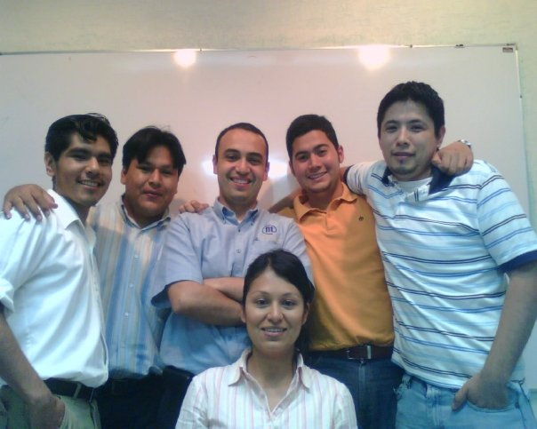Declaración de Fortalezas y Debilidades en este Indicador
Gracias a Dios y basado en las evidencias presentadas en esta sección, declaro que tengo fortaleza en el desarrollo de estrategias de aprendizaje que atienden las diferencias de mis estudiantes y promueven el desarrollo de sus facultades más altas del pensamiento. Además, tengo una base sóida en la conceptualización y el desarrollo de la fe y el aprendizaje. Asimismo, desarrollo constantemente mis competencias pedagógicas. Sin embargo, me gustaría tomar más cursos de educación con el fin de afianzar más estas fortalezas. Una primera opción consiste en tomar cursos en la Maestría en Educación en la Universidad de Montemorelos. No obstante, una limitación grande que tengo actualmente es el corto tiempo del que dispongo para tomar estos cursos.
Reflexión Personal Sobre este Indicador
Creo que el desarrollo de la capacidad de pensar y hacer es esencial en la formación de mis estudiantes. Soy consciente de la responsabilidad que tengo como catedrático de promover estas facultades altas del pensamiento en mis cursos. Con este fin, identifico las diversas necesidades de aprendizaje de mis estudiantes, y creo y ejecuto planes de atención.
En esta dimensión tengo un plan de clase definido en cada curso que enseño. Este es el contrato que firmo al inicio de curso con mis estudiantes. Allí indico lo que espero como producto de su aprendizaje y los criterios de evaluación. Además, trato de comprender la forma en la cuál aprenden mis estudiantes y de reconocer sus diferentes tipos de inteligencia. Para lograr ésto, motivo aquellos estudiantes que son más avanzados para que alcancen nuevas metas y aquellos que tienen dificultades de aprendizaje para alcanzar los estándares de desempeño esenciales en su carrera. Asimismo desarrollo estrategias de aprendizaje apoyadas por actividades que ayudan a desarrollar las facultades altas del pensamiento de mis estudiantes. Asimismo, trato a lo sumo de proponer actividades que sirvan para que mis alumnos fortalezcan su fe mediante proyectos tecnológicos y científicos que le sirvan a la humanidad y apoyen la misión de la iglesia. Finalmente, analizo el desempeño final de mis alumnos y la evaluación que realizan de cada curso con el fin de ir refinando mis estrategias de enseñanza.
Supervisión y Tutoría en la Vida Escolar de los Estudiantes
Informe Personal Sobre Asesoría o Tutoría Académica
Ayudo a establecer y ejecutar un plan de desarrollo con mis aconsejados para que lo alcancen durante su paso por la universidad y lo defiendan mediante su portafolio. Ver por ejemplo el caso de tres de mis aconsejados que realizaron excelentes portafolios (ver muestra). Estos portafolios llevaron a tres publicaciones científicas internacionales tal como se describe en la siguiente subsección.
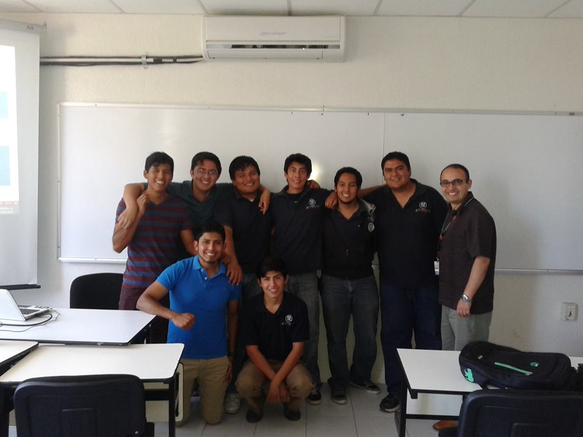Proyectos Desarrollados con los Alumnos
- Rodríguez, J., Alférez, G.H., Pompe, L.R., & Clausen, B. (2015). Interpreting the Geochemistry of Southern California Granitic Rocks Using Machine Learning. Proceedings of the 2015 International Conference on Artificial Intelligence (ICAI 2015), Las Vegas, NV, USA. Evidencia
- Zabala, B. & Alférez, G.H. (2015). Proactive Control of Traffic in Smart Cities. Proceedings of the 2015 International Conference on Artificial Intelligence (ICAI 2015), Las Vegas, NV, USA. Evidencia
- Marín, C., Alférez, G.H. Córdova, J., & González, V. (2015). Detection of Melanoma Through Image Recognition and Artificial Neural Networks. Proceedings of the 2015 IUPESM World Congress on Medical Physics and Biomedical Engineering (WC 2015), Toronto, Canada. Evidencia
- Torres, M., & Alférez, G.H. (2014). Software Architecture Evolution in the Open World through Genetic Algorithms. Proceedings of the 2014 International Conference on Software Engineering Research and Practice (SERP 2014), Las Vegas, NV, USA. Evidencia 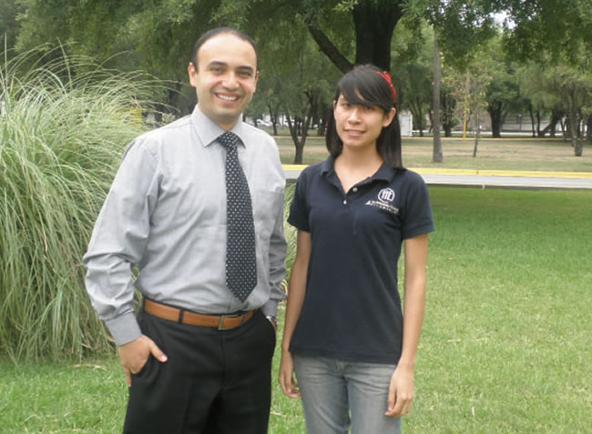
- Serrano, J.A., Regalado, L.C., Villa, V.F., & Alférez, G.H. (2014). Diagnóstico físico utilizando Google Glass y machine learning. Software Guru, 45, 50-51. Evidencia
- Núñez, R., & Alférez G.H. (2012). Propuesta para el mejoramiento de Adventist Forge (segunda parte). Revista Unaciencia, Corporación Universitaria Adventista, 8, 25-33. Evidencia
- Alférez, G.H., & Avila, P.D. (2010). Documentando en Scrum con Google Wave. Software Guru, 27, 18-19. Evidencia
- Mago, E.R., & Alférez G.H. (2010). El papel de la arquitectura de software en Scrum. Software Guru, 30, 38-40. Evidencia
- Núñez, R., & Alférez G.H. (2011). Propuesta para el mejoramiento de Adventist Forge (primera parte). Revista Unaciencia, Corporación Universitaria Adventista, 6, 26-29. Evidencia
- Sánchez, R.J., Hernández, J., & Alférez, G.H. (2010). Repositorio de componentes de software para sistemas de la Iglesia Adventista del Séptimo Día. Revista Unaciencia, Corporación Universitaria Adventista, 4, 144-152. Evidencia
- Soto, O.O., & Alférez, G.H. (2009). An architecture proposal for academic software in Adventist universities. Catalyst, Asia-Pacific International University, 4(1), 35-44. Evidencia
- Soto, O.O., & Alférez, G.H. (2009). Scrum, ¿un paradigma de administración de proyectos que cumple lo que promete?. Software Guru, 25, 35-37. Evidencia
- El Ingeniero Divino, blog desarrollado con mis estudiantes. Ellos escribieron devocionales para ingenieros adventistas que combinan fe, ciencia y tecnología.
- Open Adventist, un sitio Web construído con mis estudiantes para promover la utilización de software libre y de código abierto en la Iglesia Adventista del Séptimo Día.

Opinión Personal Sobre la Relación con los Alumnos en el Ámbito Académico
Gracias a Dios, la relación con mis alumnos ha sido muy bendecida y productiva. Como evidencia de este hecho se listan los proyectos desarrollados con ellos a lo largo de varios semestres. Ya que las fechas para publicar los resultados de los proyectos son muy exigentes, aún he dedicado tiempo de mis vacaciones para que estos resultados se puedan publicar con éxito. Esto lo hago con el mayor de los gustos sabiendo que esto ha servido para que mis alumnos sientan la satisfacción de comunicar sus hallázgos académicos al mundo científico, industrial y académico.
Convierto el salón de clases en un lugar para que junto con mis alumnos trabajemos hombro a hombro materialicen sus proyectos. Asimismo, aprecio y valoro a mis alumnos. Gracias a ésto hay un ambiente de confianza mutua. Además, proveo un ambiente cristiano con el fin de estimular el desarrollo integral de mis alumnos.
Creo que la mejor forma de motivar a mis alumnos en el área académica consiste en ser un ejemplo para ellos en esta área. Más allá de darles una clase, les comunico un estilo de vida orientado a la excelencia académica. En este sentido, soy una carta abierta para ellos.
Asimismo, trabajo de forma coordinada con el director académico de la FIT y con otros profesores para atender de la mejor manera las necesidades académicas de mis alumnos. En este sentido soy proactivo. Es decir, no espero hasta que el problema académico sea evidente para tomar una acción.
Declaración de Fortalezas y Debilidades de Este Indicador
Gracias a Dios y basado en las evidencias presentadas en esta sección, declaro que tengo fortaleza en mi relación de asesoría académica con mis alumnos. Además, durante varios semestres he tenido la bendición de haber trabajado en proyectos conjuntos con ellos, tanto a nivel de licenciatura como de maestría. Los resultados de estos proyectos han sido presentados en escenarios relevantes tanto a nivel nacional como internacional.
Reflexión Personal Sobre este Indicador
Aconsejo a mis estudiantes a realizar un trabajo de excelencia durante su carrera con el fin de prepararse para lograr sus metas en la vida. Además, les dirijo en la realización de proyectos interesantes que resuelven problemas reales. Las soluciones encontradas son afines a sus áreas de conocimiento y de interés. Además, proporciono información oportuna a mis alumnos cuando lo requieren (por ejemplo en sus objetivos académicos y de carrera). Asimismo, al inicio de cada semestre ayudo a mis alumnos a tomar los cursos apropiados de acuerdo a su situación académica y financiera. Durante el semestre, estoy al tanto de su desempeño académico y financiero con el fin de orientarlos oportunamente. Con este fin, trato de estar al tanto de las políticas y procedimientos de la universidad.
Participación y Liderazgo con los Estudiantes en la Vida Escolar y No Escolar
Participación en las Actividades Sociales, Culturales, y Académicas
Actividades Sociales
Fotografías en diversas actividades sociales con mis alumnos:
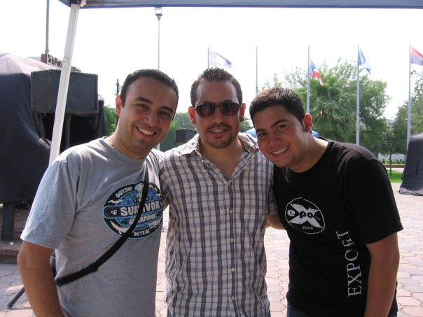 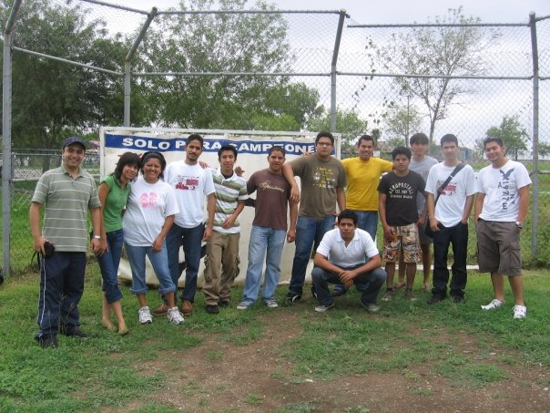 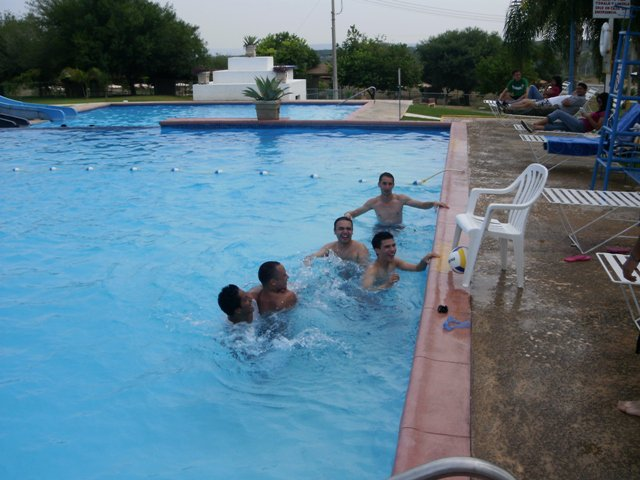
Actividades Culturales
He asistido a diversas actividades culturales a las cuáles también asisten mis alumnos y alumnos de otras facultades. Por ejemplo, abajo se presentan dos fotografías. La primer fotografía fue tomada en la exposición de proyectos de fin de semestre de la Escuela de Artes y Comunicación de la Universidad de Montemorelos, 2015. La segunda fotografía fue tomada en 2015 con varios alumnos colombianos:
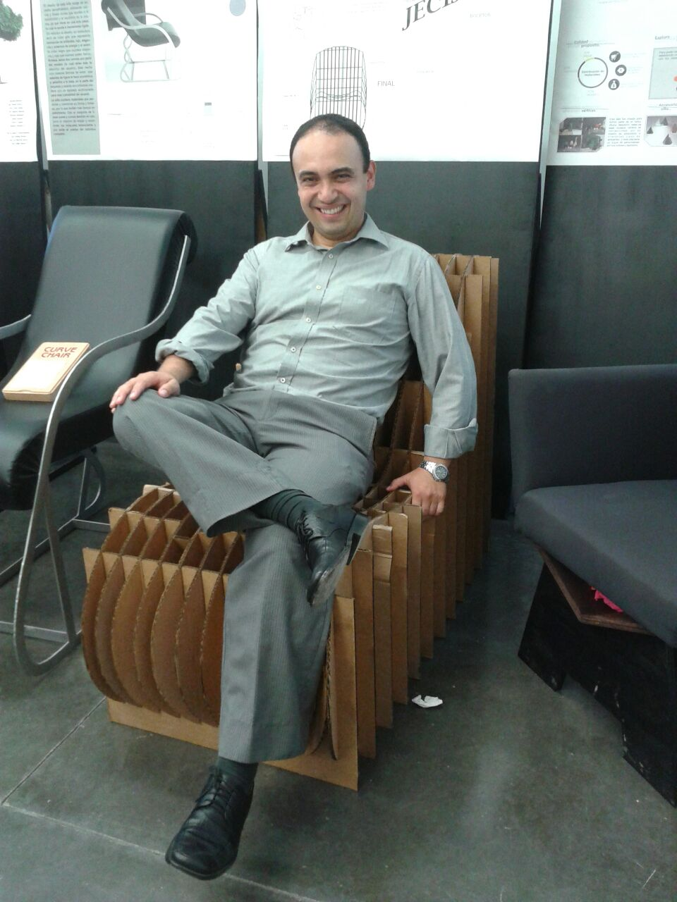 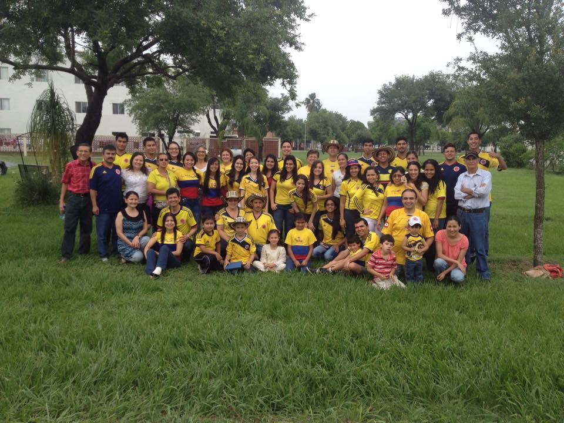Actividades Académicas
- Apoyé a mis alumnos en la organización del IV Simposio Nacional de Tecnología "Especialidades Tecnológicas" Ofrecido del 24-26 de noviembre de 2008. Evidencia
- Asesoré tres proyectos que se presentaron en ExpoCiencias NL 2014. Este evento fue organizado por la FIT: 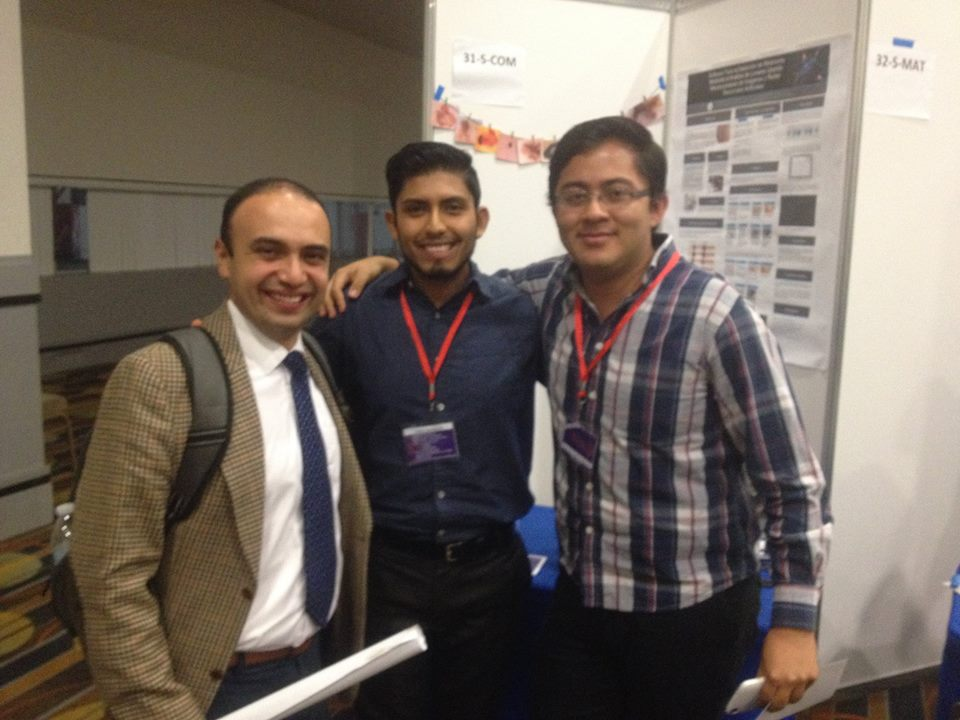
- Software Para la Detección de Cáncer en la Piel Mediante Lunares Usando Reconocimiento de Imágenes y Redes Neuronales en Expo Ciencias Nuevo León, 2014.
- Implementación de Soluciones Proactivas Para el Control de Tráfico en Expo Ciencias Nuevo León, 2014.
- Aplicación Móvil Para Reforzar la Escritura de Palabras Básicas en Niños en Expo Ciencias Nuevo León, 2014.
- Adaptación Proactiva de Motores de Bases de Datos Usando Machine Learning en Expo Ciencias Nuevo León, 2014.
- Representante de la FIT en el Consejo Universitario en los periódos escolares 2014-2015, 2015-2016.
Participación en las Actividades Espirituales
- Reconocimiento por mi destacada participación en la ponencia "Redes Sociales y Tecnologías" a los líderes juveniles "Dúnamis", Universidad de Montemorelos. 5 de marzo de 2010. Evidencia
- Recognition for serving as an English Sabbath School Teacher en el primer semestre del ciclo escolar 2014-2015, Universidad de Montemorelos. Evidencia
- Diácono ordenado el 13 de marzo de 2015 en la Iglesia de la Universidad de Montemorelos. Evidencia 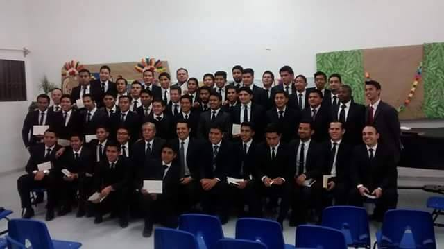
- Participaciones en la Hora del Poder de la FIT. 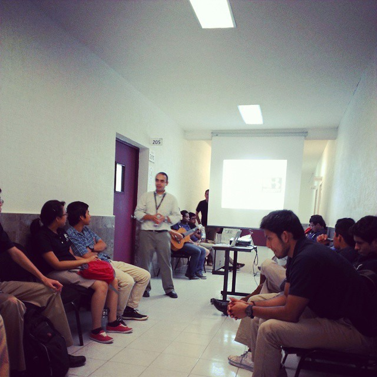
- Participando en el Global Youth Day con alumnos de la FIT en Monterrey. Cambiamos cigarrillos por botellas de agua. 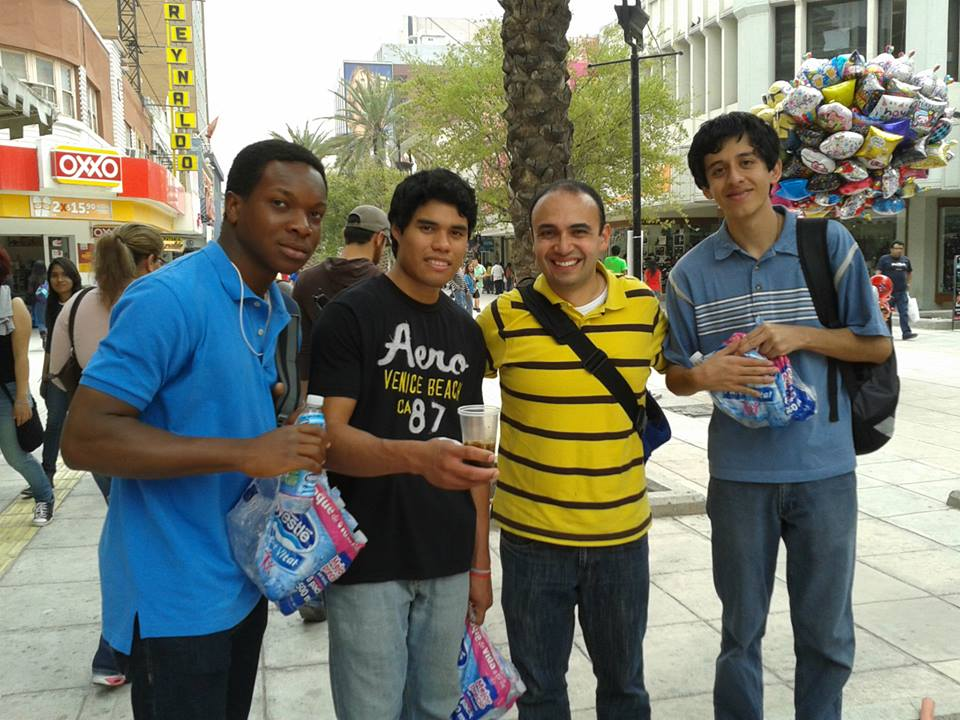
- Participación en varios retiros espirituales de la FIT. 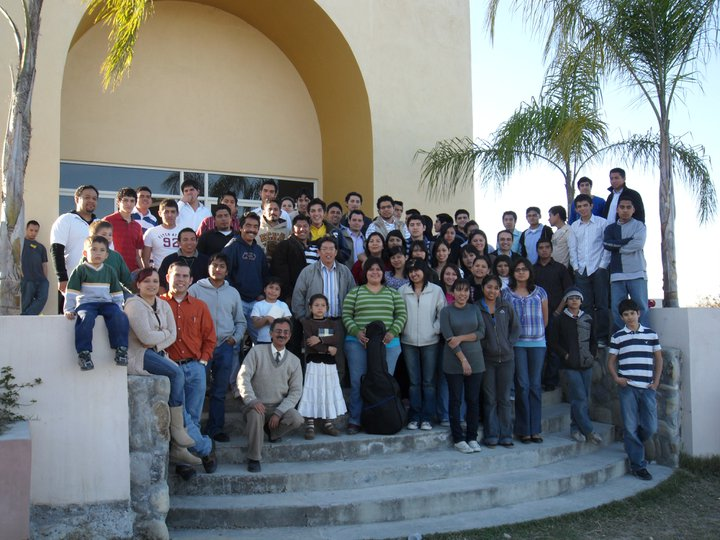 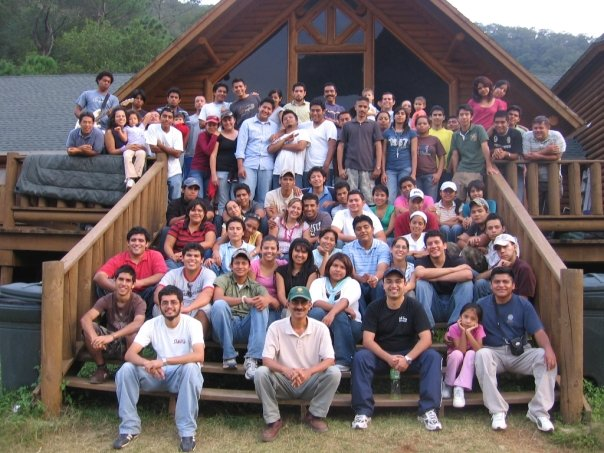
- Participación en el culto matutino de la FIT con profesores y alumnos. 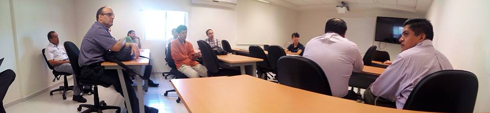
- Fotografías en actividades espirituales en la Iglesia de la Universidad de Montemorelos. 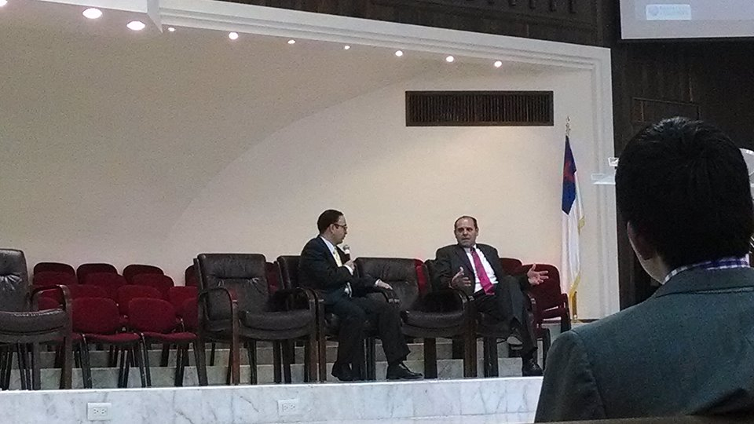 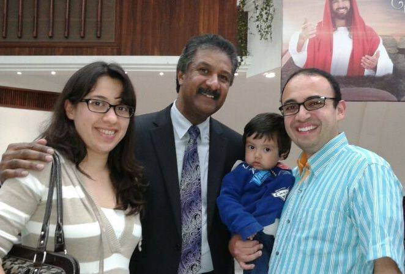
Proyectos de Servicio Comunitario, Académico y Profesionales Desarrollados con Alumnos
Proyectos de Servicio Comunitario
Reconocimiento por haber sido el responsable de un proyecto de Servicio Comunitario en la comunidad de Montemorelos en el curso escolar 2009-2010. Evidencia 1, Evidencia 2
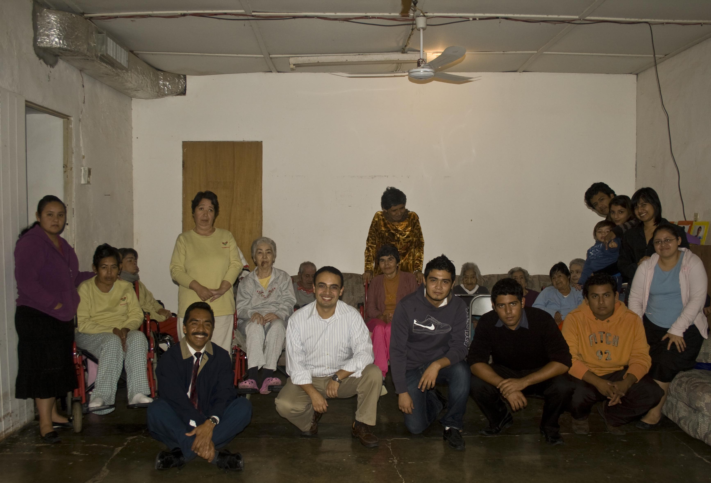Proyectos Académicos
He liderado dos proyectos académicos internacionales con mis alumnos:
- El Ingeniero Divino, blog desarrollado con mis estudiantes. Ellos escribieron devocionales para ingenieros adventistas que combinan fe, ciencia y tecnología.
- Open Adventist, un sitio Web construído con mis estudiantes para promover la utilización de software libre y de código abierto en la Iglesia Adventista del Séptimo Día.
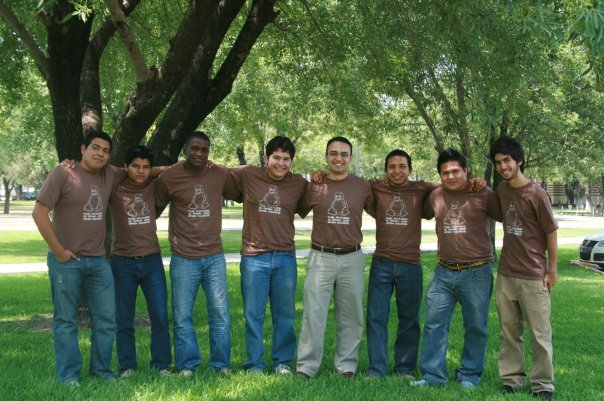
Proyectos Profesionales
Junto con el Ing. Ignacio Cruz de la FIT, estamos liderando el desarrollo del proyecto GraceLink, una app educativa multi-plataforma para la General Conference of the Seventh-day Adventist Church. En este proyecto participaron alumnos de la FIT (ver la fotografía abajo).
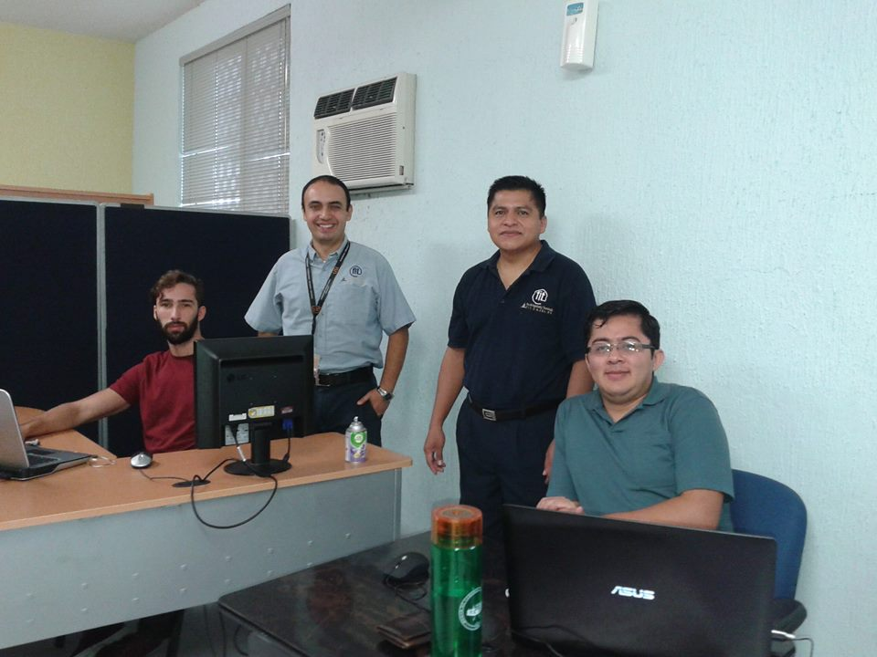Declaración de Fortalezas y Debilidades de este Indicador
Gracias a Dios y basado en las evidencias presentadas en esta sección, declaro que tengo fortaleza en mi participación en actividades sociales, culturales, académicas y espirituales. Además, he desarrollado proyectos de servicio comunitario, académico y profesionales con mis alumnos (tanto nacionales como internacionales). Me gustaría seguir participando activamente en actividades de servicio comunitario. Estas actividades hacen enternecer mi corazón de ingeniero al ayudar a mi prójimo. No obstante, dicto clases los jueves en la tarde, justo a la hora del servicio comunitario. El próximo semestre solicitaré el cambio de mi horario con el fin de poder seguir aportando en el servicio comunitario.
Reflexión Personal Sobre este Indicador
Mi trabajo como catedrático va más allá del salón de clases. Es por esto que además de las actividades académicas, he estado envuelto sistemáticamente en actividades sociales, culturales y espirituales tal como se muestra en esta sección. Asimismo he realizado proyectos de servicio comunitario, proyectos académicos y proyectos profesionales con mis alumnos. Soy consciente de que mi rol en estas actividades y proyectos dentro y fuera del aula es clave para su formación integral. Asimismo, he dado capacitación a los líderes juveniles de la iglesia y he conformado grupos de estudiantes que han ayudado a apoyar la misión de la iglesia adventista mediante la ingeniería.
Tutoría a los Estudiantes en Sus Necesidades Personales
Informe Personal de Tutoría
Informe de Reuniones y Visitas a Alumnos
A lo largo de mi carrera en la Universidad de Montemorelos he tenido el privilegio de tener reuniones con mis alumnos en mi casa. Además, los he visitado en sus lugares de residencia. En este sitio Web presento dos fotografías de reuniones con mis alumnos. Omito las fechas de todas las reuniones y de las visitas pues no cuento con la información precisa.
Opinión Personal Sobre la Relación con los Alumnos en el Ámbito de la Tutoría
La relación con mis aconsejados en el ámbito de la tutoría es buena y saludable. Por lo general, ellos me tienen confianza para comunicar sus preguntas y problemas. Les aprecio y siento que ellos me aprecian.
Con el fin de incentivar un ambiente abierto, les trato con respeto y aprecio cristiano. De hecho, en nuestras reuniones oro para que Dios les bendiga y me muestro dispuesto ante futuras consultas que ellos tengan.
Me gustaría que todos mis aconsejados estuvieran en el tercer y cuarto año con el fin de verlos más seguido pues por lo general no doy clases en los primeros años de carrera. A pesar de esta situación, he tratado de tener una comunicación constante con ellos.
Vale la pena mencionar que ha habido una relación excelente con mis aconsejados a quienes les he dirijido su portafolio 3 y su proyecto de fin de carrera. Gracias a Dios hemos creado sinergia.
Declaración de Fortalezas y Debilidades de este Indicador
Gracias a Dios y basado en las evidencias presentadas en esta sección, declaro que tengo fortaleza en la tutoría de mis estudiantes y en sus necesidades personales. En un proceso iterativo e incremental de mejora continua, mi objetivo es registrar los encuentros de mis estudiantes en el portal del mentor. Asimismo, debido a mis múltiples viajes, hay semestres en donde me queda difícil programar actividades integradoras con mis alumnos. Desde este semestre, me he propuesto realizar este tipo de actividades a pesar de tener otros compromisos.
Reflexión Personal Sobre este Indicador
En mi rol como tutor, apoyo a mis aconsejados durante su proyecto educativo. Específicamente les asisto en su desempeño académico, estudiantil (integración al ambiente), espiritual y financiero. En este sentido, sirvo como radar con el fin de conocer sus sueños y necesidades. Con esta información, les oriento para que concluyan su carrera con éxito. Creo que después de que mi hijo Johan nació, veo a mis aconsejados de otra forma. Ahora los veo más como hijos que como aconsejados. De hecho, veo a mi hijo reflejado en cada uno de ellos, y me pregunto: en un futuro, cuando Johan sea estudiante universitario, ¿qué tipo de tutoría me gustaría que recibiese?
Con el fin de contar con la información más actualizada, consulto periódicamente el portal del estudiante en el sistema académico para conocer el avance de mis aconsejados. Gracias a esta acción he podido detectar riesgos que comunico eficientemente al director académico de la FIT.
La atención a mis aconsejados la doy mayormente de forma presencial e individual. No obstante, también utilizo el correo electrónico para contactarlos rápidamente. Este ha sido especialmente el caso cuando he sido tutor de alumnos en los primeros semestres, en los cuáles no doy clases por lo general.
Con respecto a la atención individual de mis aconsejados, realizo entrevistas programadas con ellos. No obstante, también he tenido reuniones con ellos de forma casual. Por otra parte, realizo reuniones grupales con mis aconsejados en algún salón de clases durante las asambleas por tutor programadas. Asimismo, he realizado recepciones de sábado con ellos. Estas son mis reuniones favoritas pues es allí en donde de forma más relajada y en un ambiente de coinonía, compartimos vivencias acerca de las formas en la cuales Dios ha conducido nuestras vidas. Además, realizo un seguimiento continuo y minucioso del avance de mis aconsejados en sus portafolios de aprendizaje. Mayormente hago este seguimiento en formato virtual con el fin de dar respuestas rápidas a las dudas de mis aconsejados.
Finalmente, realizo oportunamente las encuestas de intención de reingreso de mis aconsejados. Además, gracias a que mis alumnos evalúan mi desempeño como tutor, puedo refinar mis estrategias para servirles de una mejor forma.
Producción de Materiales de Clase
Ejemplos de Materiales Creados para las Clases
En mis materias utilizo el material científico que he publicado en libros, revistas y conferencias eruditas. Esto con el fin de lograr que mis alumnos conecten los temas vistos en la clase con el estado del arte. Estas publicaciones se listan en esta página web. Por ejemplo, cito dos capítulos de libros:
- Pelechano, V., Fons, J., Alférez, G.H., & Gómez, M. (2012). Modelos en tiempo de ejecución. On Desarrollo de Software Dirigido por Modelos: Conceptos, Métodos y Herramientas. RA-MA, Spain. Evidencia
- Alférez, G.H., & Alférez, E.M. (2011). An aspect-oriented framework to model non-functional requirements in software product lines of service-oriented architectures. On Methodologies for Non-Functional Requirements in Service Oriented Architecture: Requirements Engineering, Model-Driven Development and Security. Hershey, Pennsylvania, USA.Evidencia
Los sílabos de los cursos que he dictado en la Universidad de Montemorelos se pueden descargar en el siguiente link: Sílabos.
Asimismo, a principios de 2015 grabé una serie de videos para el curso de Diseño de Software Inteligente en la modalidad virtual de la Maestría en Ciencias Computacionales.
Elaboración de Material Didáctico
- He programado el código fuente utilizado en varios cursos. Por ejemplo: Programación Orientada a Objetos
- He elaborado las presentaciones en PowerPoint de mis cursos. Comparto los archivos con mis estudiantes. Por ejemplo: Varias presentaciones
Declaración de Fortalezas y Debilidades de este Indicador
Gracias a Dios y basado en las evidencias presentadas en esta sección, declaro que tengo fortaleza en la creación de materiales de clase. Aunque he elaborado material didáctico, creo que debo crear material en otros formatos (i.e., aumentar la variabilidad del material) con el fin de llegarle a los alumnos de forma cada vez más efectiva.
Reflexión Personal Sobre este Indicador
Como catedrático soy generador de materiales que ayuden a facilitar las experiencias de aprendizaje de mis estudiantes. Gracias a Dios, he producido mis propios materiales al ser conocedor de las disciplinas que enseño en la Universidad de Montemorelos. Los materiales que produzco sirven como instrumentos que estimulan a mis alumnos a aprender. Por ejemplo, introduzco información nueva en mis cursos a partir de mis artículos científicos.
Uso de la Tecnología de Vanguardia para su Asignatura y para la Educación en Línea
Uso de Tecnologías de Información
- Video Conferencias
- Podcasts
- Blog: Inter-American IT
- Blog: El Ingeniero Divino
- Blog: #40Ideas40Days
- Animaciones
- Videos Producidos
- Videos Grabados para UM Virtual. Favor acceder a estos videos en la e42 (materia: Diseño de software inteligente)
Uso de la e-42
- Lista de Libros de Trabajo
- Lista de Cursos
- Muestra de Libro de Trabajo 1
- Muestra de Libro de Trabajo 2
- Curso de Diseño y Tutoría de Cursos en Línea en la Universidad de Montemorelos
Uso de Herramientas Tecnológicas de la Especialidad
- Lenguajes de Programación: Java, .NET (Visual Basic y C#), PHP, HTML, JavaScript, C, C++, SQL, PL/SQL, Python, y Ruby on Rails
- Ciencias de Datos: Weka, Apache Hadoop, Apache HBase, Apache Mahout, y Apache Spark
- Análisis Matemático y Estadístico: Statgraphics, WinQSB, R, y LAPACK
- DBMS: Oracle, Oracle Forms, SQL Server, MySQL, PostgreSQL, y MS Access
- Diseño de Sitios Web: Front Page, Dreamweaver, y Flash
- Modelado UML: Rational Rose, Visual Paradigm, y Enterprise Architect
- Servidores de Aplicaciones: IIS y Apache Tomcat
- Desarrollo de Servicios Web y de Composiciones de Servicios Web: Apache Axis2, Apache CXF, y Apache ODE (WS-BPEL)
- Administración de Procesos de Negocios: Activiti (BPMN2) y Babel
- Modelos en Tiempo de Ejecución: EMF y Jena
- Otros: OSGi, AspectJ, OpenCV, Eclipse, NetBeans, XML, y varias aplicaciones free and open-source
Uso de Bases de Datos
Mediante la Virtual Private Network (VPN) de la Universitat Politècnica de València puedo acceder a las bases de datos más relevantes en ciencias computacionales (e.g. Elsevier, Springer, IEEE, y ACM). El trabajo relacionado citado en mis publicaciones ha sido accedido a través de este servicio.
Declaración de Fortalezas y Debilidades de este Indicador
Gracias a Dios y basado en las evidencias presentadas en esta sección, declaro que tengo fortaleza en el uso de tecnología de vanguardia en mis asignaturas en la educación en línea. Específicamente, utilizo eficientemente las tecnologías de la información, hago uso eficiente de la e-42, exploto el potencial de herramientas tecnológicas en el área de ciencias computacionales, y hago uso de bases de datos eruditas.
Reflexión Personal Sobre este Indicador
Como un científico computacional reconozco la importancia de conocer a fondo las herramientas tecnológicas que utilizo en mis cursos. Los alumnos de ingeniería siempre están ávidos de aprender nuevas cosas, especialmente cuando estas cosas están basadas en la tecnología. Es por ésto que como profesor en carreras de ingeniería veo que es imprescindible explorar y explotar la tecnología en mis cursos con el fin de atraer la atención de mis alumnos. En este sentido, por ejemplo, suelo explicar el código fuente de varios programas computacionales en mis clases. Con este código hago demostraciones en vivo que demuestran la potencia de las aproximaciones presentadas. Además, creo blogs, video conferencias, podcasts, etc. que mis alumnos, y otros jóvenes alrededor del mundo, pueden acceder de forma asincrónica. Finalmente, hago uso de varias bases de datos eruditas en el área de ciencias computacionales con el fin de basar mis cursos y los proyectos con mis alumnos en el mejor estado del arte.
Colaboración Especializada y Proyectos de Transferencia que Enriquecen el Ejercicio Profesional
Participación en la Academia
Mi participación en la academia inicia dentro de la Academia de Tecnologías de la Información de la Facultad de Ingeniería y Tecnología de la Universidad de Montemorelos. En esta academia trabajamos tres profesores: Mtro. Daniel Gutiérrez, Ing. Ignacio Cruz y un servidor.
Mi participación en la Academia de Tecnologías de la Información se evidencia en los siguientes aspectos:
- Preparación de varias materias del Plan 2010: Evidencia
- Preparación de la propuesta de la nueva Maestría en Ingeniería de Software y preparación de varias materias de la misma: Evidencia
- Participé en la creación del Global Software Lab que depende de la Academia de Tecnologías de la Información: Evidencia
- Presentaciones académicas que he dado a nivel nacional e internacional:
- Cultural Perception of Seventh-day Adventist Fundamental Beliefs through Big Data Analysis: presentación en la Segunda Semana de la Ingeniería, I Encuentro Internacional de Estudiantes y Profesionales en Ingeniería de Sistemas de Instituciones Adventistas, y II reunión de la Red Latinoamericana Adventista de Carreras de Informática (RELACI), Medellín, Colombia. Agosto 20, 2015.
- Facing Uncertainty in Web Service Compositions: presentación en la Segunda Semana de la Ingeniería, I Encuentro Internacional de Estudiantes y Profesionales en Ingeniería de Sistemas de Instituciones Adventistas, y II reunión de la Red Latinoamericana Adventista de Carreras de Informática (RELACI), Medellín, Colombia. Agosto 18, 2015.
- Interpreting the Geochemistry of Southern California Granitic Rocks using Machine Learning: presentación en The 17th International Conference on Artificial Intelligence (program), Las Vegas, Nevada. Julio 30, 2015. Descargar
- Proactive Control of Traffic in Smart Cities: presentación en The 17th International Conference on Artificial Intelligence (program), Las Vegas, Nevada. Julio 28, 2015. Descargar
- Detection of Melanoma Through Image Recognition and Artificial Neural Networks: presentación en IUPESM World Congress on Medical Physics and Biomedical Engineering (program), Toronto, Canada. Junio 9, 2015. Descargar
- Cultural Perception of Seventh-day Adventist Fundamental Beliefs through Big Data Analysis: presentación en Andrews Research Conference (program), Andrews University, USA. Mayo 14, 2015. Descargar
- Videoconference: Detección de Melanoma a Través de Reconocimiento de Imágenes y Redes Neuronales Artificiales: I Semana de la Ciencia, Tecnología e Innovación, Corporación Universitaria Adventista, Colombia. Abril 15. 2015 Programa.
- A Road-Map for Building Your Mobile App: GAiN 2015, Silver Spring, MD. February 12, 2015. Program. La fotografía fue tomada del sitio Web de Adventist Review. 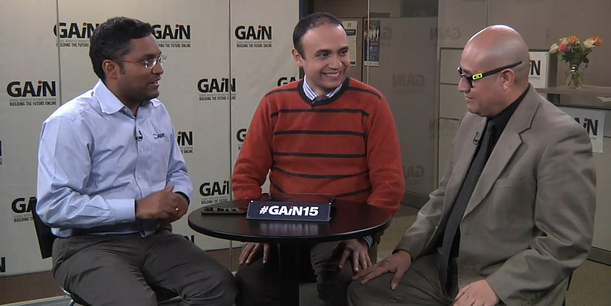
- What is Your Worldview as a Seventh-day Adventist IT Manager?: meeting of IT managers organized by the CIO of the General Conference of the Seventh-day Adventist Church, Silver Spring, MD. Febrero 11, 2015
- Vision of the Global Software Lab: meeting of IT managers organized by the CIO of the General Conference of the Seventh-day Adventist Church, Silver Spring, MD. Febrero 10, 2015
- What Does Teaching from a Biblical Worldview Means to Me: entrevista con la Dra. Raquel Korniejczuk. Ver
- Carteles de Investigación: IV Feria de Investigación (Universidad de Montemorelos) y ExpoCiencias NL 2014. Noviembre 2014. Aplicación Móvil Para el Aprendizaje de Figuras Geométricas y Palabras Básicas del Español, Software Para la Detección de Melanoma Mediante el Análisis de Lunares Usando Reconocimiento de Imágenes y Redes Neuronales Artificiales, Implementación de Soluciones Proactivas en el Control de Tráfico, Adaptación Proactiva de Motores de Bases de Datos Mediante Machine Learning
- Presentación en Sabbath School U: Agosto 2014. Ver
- Ingeniería Dirigida por Modelos Para el Desarrollo de Software Auto-Adaptativo en el Mundo Inteligente: presentación para UM Virtual. Junio 1, 2014 Ver
- Facing Uncertainty in Web Service Compositions: presentación en Andrews Research Conference (programa), Andrews University, USA. Mayo 9, 2014. Descargar 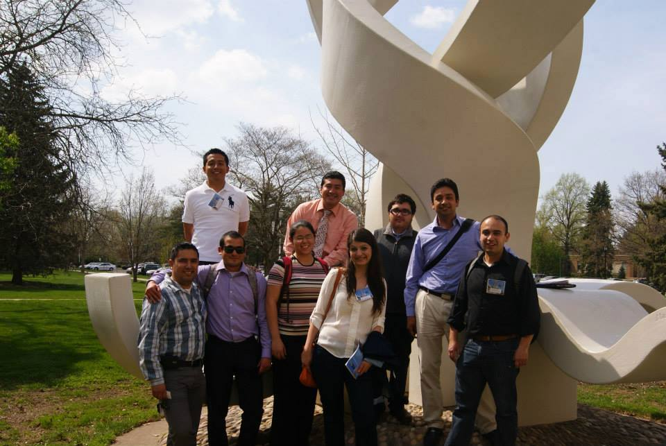
- A Glimpse of the World through the Eyes of Christian a Professor in Computer Science: presentación en la Universidad de Montemorelos. Marzo 10, 2014. Descargar
- Evangelismo Tecnológico: presentación en la Iglesia de la Universidad de la Universidad de Montemorelos. Marzo 1, 2014. Descargar
- Facing Uncertainty in Web Service Compositions: presentación en the IEEE 20th International Conference on Web Services (programa), Santa Clara, California, Junio 27-Julio 2, 2013. Descargar
- Dynamic Evolution of Context-Aware Systems with Models at Runtime: presentación en the ACM/IEEE 15th International Conference on Model Driven Engineering Languages & Systems (programa), Innsbruck, Austria, Septiembre 30 - Octubre 5, 2012. Descargar
- Applying CVL to Business Process Variability Management: presentación en VARY (a workshop associated with the ACM/IEEE 15th International Conference on Model Driven Engineering Languages & Systems), Innsbruck, Austria, Septiembre 30 - Octubre 5, 2012. Descargar
- Systematic Reuse of Web Services through Software Product Line Engineering: presentación en the European Conference on Web Services 2011 (program), Lugano, Suiza, Septiembre 14-16, 2011. Descargar
- Context-Aware Autonomous Web Services in Software Product Lines: presentación en the 15th International Software Product Line Conference (programa), Munich, Alemania, Agosto 21-26, 2011. Descargar
- Servicios Web Autónomos y Sensibles al Contexto: presentación en the I Jornada everyWare: Construcción de Software Adaptativo para la Integración de Personas, Servicios y Cosas usando Modelos en Tiempo de Ejecución, Valencia, España, Mayo 24, 2011. Descargar
- Technology for Evangelism: presentación para la Adventist International Institute of Advanced Studies (http://www.aiias.edu/). Ver
- Tecnología para la Evangelización: presentation en el Diplomado en Comunicación Efectiva, Montemorelos, NL, Julio 11-16, 2010. http://diplomadocom.sitiosum.com/?page_id=17 . Descargar
- Ética de la Computación y de la Información: seminario presentado a los emplados de la Dirección de Sistemas de la Universidad de Montemorelos. Descargar
- The Power of Free and Open Source Software: presentación para GiEN 2009, Orlando, FL, Septiembre 9-12, 2009. programa. Descargar
- Marco de Trabajo Para la Integración Tecnológica: presentación para el congreso de maestros de la División Inter-Americana, Cancún, México, Septiembre 6-10, 2009. http://cancun09.interamerica.org/seminarios-universitarios. Descargar
Participación en Asociaciones Profesionales
Referente en la Red Latinoamericana Adventista de Carreras de Informática (RELACI). Foto en la reunión anual en Medellín, Colombia. 17-20 de agosto de 2015
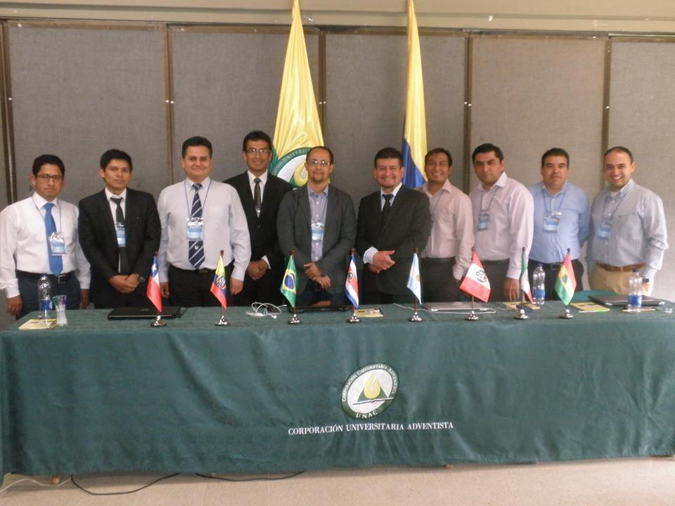Cursos de Actualización en la Especialidad
Las conferencias internacionales en ciencias computacionales a las cuáles he asistido para presentar diversos artículos científicos me han servido como cursos de actualización. Para la muestra, favor ver los certificados de participación (certificado 1 y certificado 2) de la conferencia internacional más reciente a la cuál asistí para presentar dos artículos científicos.
Cursos en Filosofía de la Educación Adventista
- Asistí treinta horas a la semana de actualización Fundamentos Bíblicos de las Disciplinas Académicas en la Universidad de Montemorelos del 13 al 17 de enero de 2014. Evidencia.
- Participé en el Primer Congreso Interamericano de Maestros en 2009 (en donde también participé con una presentación).
- Participé en el Inter-American Division Second Virtual Education Council en 2015. 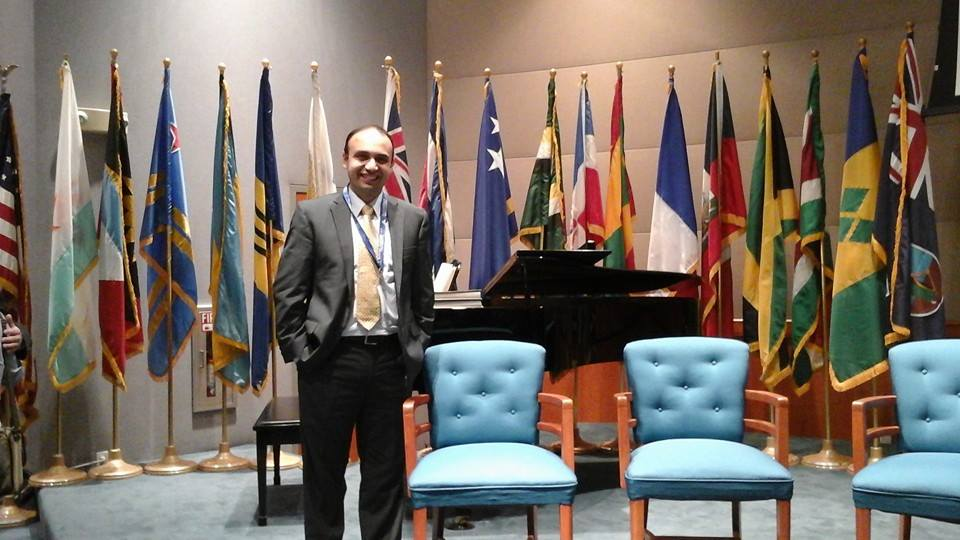
Cursos de Actualizacion en Docencia
- Participé en el Primer Congreso Interamericano de Maestros en 2009 (en donde también participé con una presentación).
- Participé en el Inter-American Division Second Virtual Education Council en 2015.
Consultoría Profesional
- Miembro del Comité de Personal Administrativo del Auto Estudio FIMPES en el Autoestudio Institucional FIMPES 2014, Segunda Parte.
- Evaluador de la Junta Internacional de Educación (IBE) de la División Interamericana de la Iglesia Adventista del Séptimo Día, 2015.
- Consultor en el área de Ciencias de Datos con investigadores de Loma Linda University (2014-2015). En la foto con el Dr. Benjamin Clausen. Con su grupo de investigación publicamos un artículo científico: Rodríguez, J., Alférez, G.H., Pompe, L.R., & Clausen, B. (2015). Interpreting the Geochemistry of Southern California Granitic Rocks Using Machine Learning. Proceedings of the 2015 International Conference on Artificial Intelligence (ICAI 2015), Las Vegas, NV, USA. Evidencia 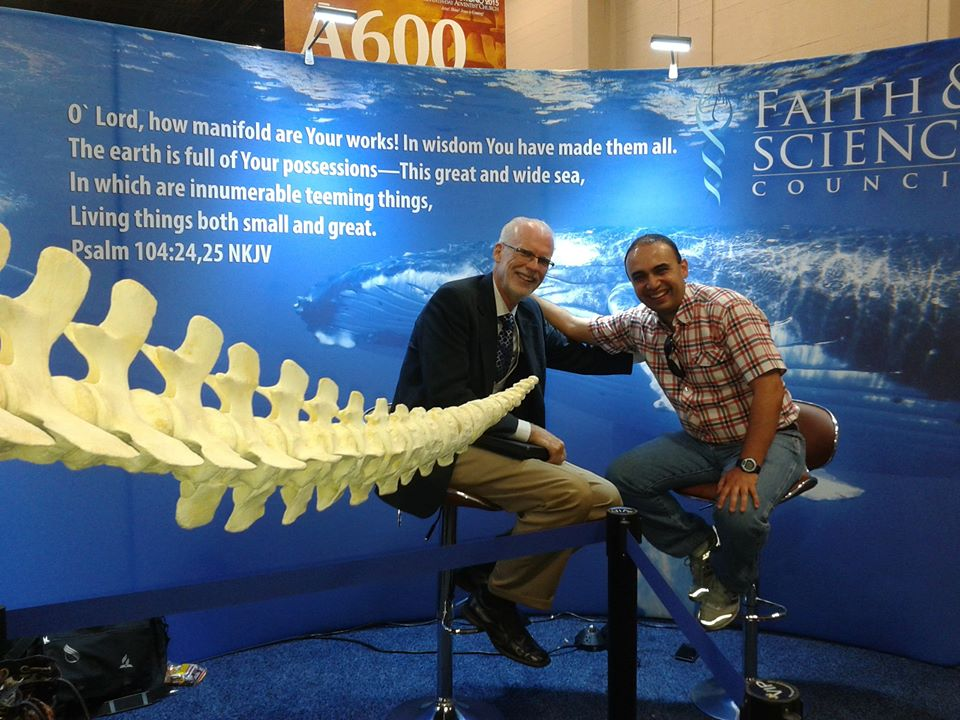
- Proyectos de Desarrollo de Software que Lidero Actualmente
General Conference of the Seventh-day Adventist Church
GraceLink app: una app educativa multi-plataforma.General Conference of the Seventh-day Adventist Church
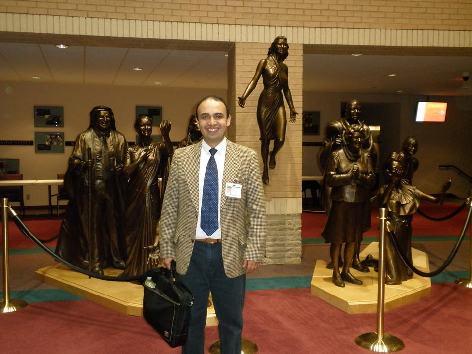
Sharing Hope app: una app multi-plataforma para compartir literatura en varios idiomas. - Productos de Software
Asia-Pacific International University (Information Technology Services Department), Tailandia. Junio 2005 – Julio 2007
Desarrollé el Dorado Project, una aplicación Web multi-capa que integra varios departamentos de esta universidad.Orbitel S.A. E.S.P (UNE), Colombia. Julio 2003 – Diciembre 2003
Administré el ciclo de desarrollo de un software para asegurar la calidad y la calidad de los procesos de esta compañía. - Prototipos
Universitat Politècnica de València, España. Octubre 2010 – Actualmente
Desarrollar el Model-based Reconfiguration Engine for Web Services (MoRE-WS).
Universidad de Montemorelos, México. Enero 2008 – Septiembre 2010
Coordiné el desarrollo de varios prototipos de software.
Assumption University, Tailandia. 2008.
Propuse y apliqué un marco de trabajo orientado a aspectos a una línea de productos de software de mesas de ayuda.
Universidad EAFIT, Software Engineering Research Group.
Febrero 2001 – Junio 2001; Enero 2003 – Mayo 2003
Desarrollé varias herramientas basadas en UML, Java, XML y otras tecnologías relacionadas.
Declaración de Fortalezas y Debilidades de este Indicador
Gracias a Dios y basado en las evidencias presentadas en esta sección, declaro que participo activamente en la academia. Esta participación se evidencia tanto en el interior de la Universidad de Montemorelos como hacia el exterior (tanto nacional como internacionalmente). Aunque participo en la Red Latinoamericana Adventista de Carreras de Informática (RELACI), buscaré en el corto plazo entrar a otras asociaciones profesionales. Tal como lo comenté en esta sección, las diversas conferencias internacionales en ciencias computacionales a las cuáles he asistido como ponente me han servido como cursos de actualización en mi área. En estas conferencias he tenido la bendición de disfrutar de presentaciones magistrales de científicos y expertos que muestran el estado del arte en diversos temas de mi interés. Por otra parte, declaro que he asistido a cursos en filosofía de la educación adventista y de actualización en docencia tanto en Montemorelos como en otros lugares. Además, es importante resaltar que gracias a Dios he tenido la oportunidad de prestar mis servicios como consultor profesional a diversas entidades, tales como la Conferencia General y la División Interamericana de la Iglesia Adventista del Séptimo Día, y Loma Linda University.
Reflexión Personal Sobre este Indicador
Tal como se muestra en esta sección, estoy enamorado de la academia. Amo mi trabajo como catedrático, amo trabajar en proyectos con colegas (tanto de la academia a la cuál pertenezco como de otras academias, dentro y fuera de la Universidad de Montemorelos), amo trabajar en proyectos con mis alumnos, y amo conectar puntos: necesidades en el mundo con el conocimiento que se genera en la FIT. Gracias a Dios, varios aspectos me han hecho madurar como catedrático: la preparación de planes de estudio, el trabajo en la creación de un laboratorio de investigación en la FIT, la realización de varias investigaciones que me han llevado a presentar los resultados obtenidos en varios lugares del mundo, el participar en la RELACI, el haber tomado cursos en filosofía de la educación adventita y en docencia, y el haber servido de consultor en varios proyectos de transferencia.
Investigación y Difusión de la Investigación
Cursos de Investigación Realizados
- Cursos de investigación durante el Master of Science in Information and Communication Technology. Evidencia
- Andrews Research Conference, Andrews University, 2014. Evidencia
- Andrews Research Conference, Andrews University, 2015. Evidencia
- Curso de investigación impartido en la Universidad de Montemorelos en el segundo semestre del año académico 2014-2015: Evidencia
- Las conferencias internacionales en ciencias computacionales a las cuáles he asistido para presentar diversos artículos científicos me han servido como cursos de actualización en la investigación. Para la muestra, favor ver los certificados de participación (certificado 1 y certificado 2) de la conferencia internacional más reciente a la cuál asistí para presentar dos artículos científicos.
Participación en Comités de Tesis
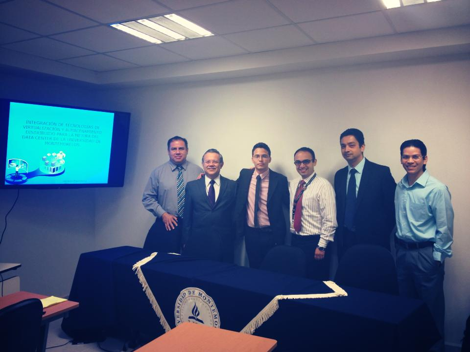Líneas de Investigación
La siguiente línea de investigación fue aprobada por la Dirección de Investigación e Innovación (DII) de la Universidad de Montemorelos: Evidencia. Esta línea se ha desarrollado en el Global Software Lab, Facultad de Ingeniería y Tecnología (FIT), Universidad de Montemorelos. Propuse la creación de este laboratorio de investigación (Evidencia)
Ver líneas de investigación aprobadas en años anteriores: Evidencia.
Abajo se presentan dos fotografías con algunos alumnos con quienes he trabajado en proyectos del Global Software Lab:
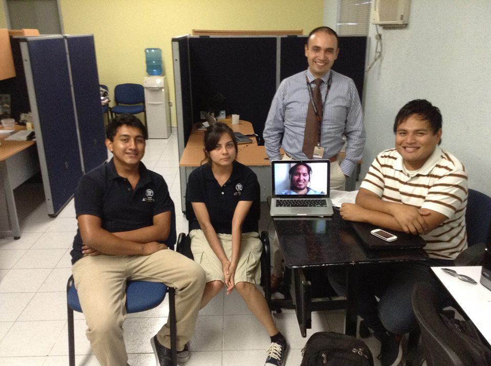 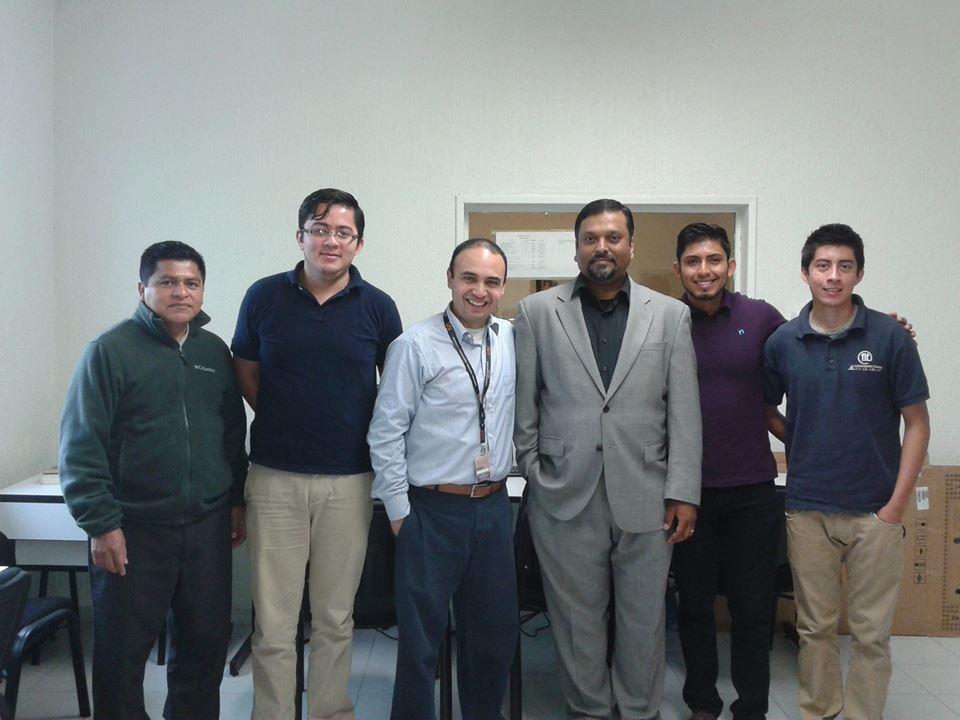Publicación de Investigaciones Arbitradas y No Arbitradas
Tesis
- Doctorado en Informática: Achieving Autonomic Web Service Compositions with Models at Runtime: Evidencia
- Master of Science in Information and Communication Technology: Aspect-Oriented Driven Variability in Software Product Lines: Evidencia
- Ingeniería de Sistemas: Análisis de un Sistema de Información Bajo la Aproximación de la Orientación a Aspectos. Caso Práctico: Manejo de Solicitudes en la Mesa de Ayuda de Servicios Generales de Una Universidad: Evidencia
Artículos en Revistas Científicas Internacionales
- Heradio, R., Pérez-Morago, H., Alférez, M., Fernández-Amoros, D., Alférez, G.H. (in press). Augmenting Measure Sensitivity to Detect Essential, Dispensable and Highly Incompatible Features in Mass Customization. European Journal of Operational Research. Evidencia
- Alférez, G.H., Pelechano, V. (2014). Facing Uncertainty in Web Service Compositions. International Journal of Services Computing (IJSC), 2(2), 1-16. Evidencia
- Alférez, G.H., Pelechano, V., Mazo, R., Sailinesi, C., Diaz, D. (2013). Dynamic Adaptation of Service Compositions with Variability Models. Journal of Systems and Software, 91, 24-47. Evidencia
- Tabares, M. S., Alférez, G.H., & Alférez, E.M. (2008). El Desarrollo de Software Orientado a Aspectos: Un Caso Práctico para un Sistema de Ayuda en Línea. Avances en Sistemas e Informática, Universidad Nacional de Colombia, 5(2),61-68. Evidencia
- Alférez, G.H., & Poonphon, S. (2007). An Aspect-Oriented Product Line Framework to Support the Development of Software Product Lines of Web Applications. International Journal of the Computer, the Internet and Management, 15(SP4), 13.1-13.5. Evidencia
Capítulos de Libros
- Pelechano, V., Fons, J., Alférez, G.H., & Gómez, M. (2012). Modelos en tiempo de ejecución. On Desarrollo de Software Dirigido por Modelos: Conceptos, Métodos y Herramientas. RA-MA, Spain. Evidencia
- Alférez, G.H., & Alférez, E.M. (2011). An aspect-oriented framework to model non-functional requirements in software product lines of service-oriented architectures. On Methodologies for Non-Functional Requirements in Service Oriented Architecture: Requirements Engineering, Model-Driven Development and Security. Hershey, Pennsylvania, USA. Evidencia
Artículos Científicos en Memorias de Eventos Internacionales
- Rodríguez, J., Alférez, G.H., Pompe, L.R., & Clausen, B. (2015). Interpreting the Geochemistry of Southern California Granitic Rocks Using Machine Learning. Proceedings of the 2015 International Conference on Artificial Intelligence (ICAI 2015), Las Vegas, NV, USA. Evidencia
- Zabala, B. & Alférez, G.H. (2015). Proactive Control of Traffic in Smart Cities. Proceedings of the 2015 International Conference on Artificial Intelligence (ICAI 2015), Las Vegas, NV, USA. Evidencia
- Marín, C., Alférez, G.H. Córdova, J., & González, V. (2015). Detection of Melanoma Through Image Recognition and Artificial Neural Networks. Proceedings of the 2015 IUPESM World Congress on Medical Physics and Biomedical Engineering (WC 2015), Toronto, Canada. Evidencia
- Torres, M., & Alférez, G.H. (2014). Software Architecture Evolution in the Open World through Genetic Algorithms. Proceedings of the 2014 International Conference on Software Engineering Research and Practice (SERP 2014), Las Vegas, NV, USA. Evidencia
- Alférez, G.H., & Pelechano, V. (2013). Facing Uncertainty in Web Service Compositions. Proceedings of the IEEE 20th International Conference on Web Services (ICWS 213), Santa Clara, CA, USA. Evidencia
- Alférez, G.H., & Pelechano, V. (2012). Dynamic Evolution of Context-Aware Systems with Models at Runtime. Proceedings of the ACM/IEEE 15th International Conference on Model Driven Engineering Languages & Systems (MODELS 2012), Innsbruck, Austria. Evidencia
- Ayora, C., Alférez, G.H., Torres, V., Pelechano, V. (2012). Applying CVL to Business Process Variability Management. VARY workshop at MODELS 2012, Innsbruck, Austria. Evidencia
- Alférez, G.H., & Pelechano, V. (2011). Context-Aware Autonomous Web Services in Software Product Lines. Proceedings of the 15th International Software Product Line Conference (SPLC'11), München, Germany, IEEE Computer Society, Los Alamitos, CA, 2011. Evidencia
- Alférez, G.H., & Pelechano, V. (2011). Systematic Reuse of Web Services through Software Product Line Engineering. Proceedings of the European Conference on Web Services 2011 (ECOWS'11), Lugano, Switzerland, IEEE Computer Society, Los Alamitos, CA, 2011. Evidencia
- Ayora, C., Alférez, G.H., Torres, V., Pelechano, V. (2011). Procesos de Negocio Auto-Adaptables al contexto. Proceedings of the VII Jornadas de Ciencia e Ingeniería de Servicios (JCIS 2011), A Coruña, Spain. Evidencia
Revistas Tecnológicas y Científicas
- Cruz, E. & Alférez, G.H. (2014). Gestionando procesos de negocios usando BPMN 2.0. Software Guru, 46, 32-33. Evidencia
- Serrano, J.A., Regalado, L.C., Villa, V.F., & Alférez, G.H. (2014). Diagnóstico físico utilizando Google Glass y machine learning. Software Guru, 45, 50-51. Evidencia
- Núñez, R., & Alférez G.H. (2012). Propuesta para el mejoramiento de Adventist Forge (segunda parte). Revista Unaciencia, Corporación Universitaria Adventista, 8, 25-33. Evidencia
- Alférez, G.H., & Avila, P.D. (2010). Documentando en Scrum con Google Wave. Software Guru, 27, 18-19. Evidencia
- Mago, E.R., & Alférez G.H. (2010). El papel de la arquitectura de software en Scrum. Software Guru, 30, 38-40. Evidencia
- Núñez, R., & Alférez G.H. (2011). Propuesta para el mejoramiento de Adventist Forge (primera parte). Revista Unaciencia, Corporación Universitaria Adventista, 6, 26-29. Evidencia
- Sánchez, R.J., Hernández, J., & Alférez, G.H. (2010). Repositorio de componentes de software para sistemas de la Iglesia Adventista del Séptimo Día. Revista Unaciencia, Corporación Universitaria Adventista, 4, 144-152. Evidencia
- Alférez, G.H., & Alférez, E.M. (2009). Utilización de CLAPACK para resolver sistemas de ecuaciones lineales mediante paralelismo y optimización de memoria. Revista Unaciencia, Corporación Universitaria Adventista, 3, 27-33. Evidencia
- Soto, O.O., & Alférez, G.H. (2009). An architecture proposal for academic software in Adventist universities. Catalyst, Asia-Pacific International University, 4(1), 35-44. Evidencia
- Soto, O.O., & Alférez, G.H. (2009). Scrum, ¿un paradigma de administración de proyectos que cumple lo que promete?. Software Guru, 25, 35-37. Evidencia
- Alférez, G.H. (2008). Measurement of the support in the development stages of an aspect-oriented software product line framework. Catalyst, Asia-Pacific International University, 3(1), 14-24. Evidencia
Otras Publicaciones
- Alférez, G.H. (2015). Machine Analyes Ted Wilson's Post-Election Sermon. ADvindicate. Retrieved August 3, 2015, from http://advindicate.com/articles/2015/7/28/machine-analyzes-ted-wilsons-post-election-sermon
- Alférez, G.H. (2015). Big Data for Reaching a Big World. Adventist Review, 192(11), 47-51
- Alférez, G.H. (2014). Evangelismo Tecnológico. UMVirtual. Retrieved September 18, 2014, from http://umvirtual.org/evangelismo-tecnologico-spot3
- Alférez, G.H. (2013). What's Next in Communication and IT in Our Church?. ADvindicate. Retrieved May 9, 2013, from http://advindicate.com/articles/3139
- Alférez, G.H. (2010). Looking for Adventist geeks. Spectrum Magazine. Retrieved July 27, 2010, from http://www.spectrummagazine.org/blog/2010/06/22/looking_adventist_geeks
- Alférez, G.H. (2010). Technology reformers. Spectrum Magazine. Retrieved July 27, 2010, from http://www.spectrummagazine.org/blog/2010/07/06/technology_reformers
- Columnista para Comunicando, Universidad de Montemorelos.
Revisor
Puedo suministrar en un mensaje privado las evidencias de mis participaciones como revisor.
- Frontiers of Computer Science, Springer.
- Journal of Computational Methods in Sciences and Engineering (JCMSE), IOS Press.
- Journal of Information Technology & Software Engineering, OMICS.
- 2015 Software Product Lines Conference, SPLC 2015. Nashville, USA, July 20-24, 2015.
- 7th International Conference on Research Challenges in Information Science, RCIS 2013. Paris, France, May 29-31, 2013.
- 25th International Conference on Advanced Information Systems Engineering, CAiSE 2013. Valencia, Spain, June 17-21, 2013.
Tesina de Maestría Codirigida
- De La Fuente, J. (2012). Herramienta para la Generación y Despliegue de Composiciones de
Servicios Web Mediante Modelos BPMN. Máster en Ingeniería del Software, Métodos Formales y Sistemas de
la Información. Universidad Politécnica de Valencia. Evidencia
Otros
- Creador y editor de El Ingeniero Divino, el único blog con devocionales para ingenieros adventistas.
- Creador y editor de Inter-American IT, una publicación elctrónica en español e inglés con noticias tecnológicas en la Iglesia Adventista del Séptimo Día.
Declaración de Fortalezas y Debilidades de este Indicador
Gracias a Dios y basado en las evidencias presentadas en esta sección, declaro que he realizado e impartido diversos cursos de invetigación. Además, he participado en comités de proyectos de fin de carrera en la Universidad de Montemorelos. Asimismo, a lo largo de los años he tenido la oportunidad de formalizar líneas de investigación en la Universidad de Montemorelos. Actualmente, realizo investigaciones en el Global Software Lab junto con varios alumnos de licenciatura y de posgrado de la FIT. Además, gracias a Dios he realizado varias publicaciones científicas mayormente en escenarios internacionales de alto impacto (revistas arbitradas, memorias de conferencias, capítulos de libros, etc.). Asimismo, he sido revisor de varias revistas científicas y de conferencias de alto impacto que se han llevado a cabo en Estados Unidos y en Europa. Estoy completamente seguro que mediante la difusión de nuestros hallázgos científicos en la Universidad de Montemorelos podemos testificar a otros acerca de nuestro compromiso en ayudar al mundo a resolver problemas relevantes.
Reflexión Personal sobre este Indicador
Las contribuciones científicas presentadas en esta sección son el resultado de una secuencia de eventos en mi vida. Algunos pueden decir que las cosas ocurren como el resultado del azar. Sin embargo, creo que todos estos eventos han sido diseñados con un propósito.
Mi interés en la investigación no es nuevo. Recuerdo que cuando era niño mis padres solían animar a mi hermano y a mí a crear artefactos sofisticados con fichas de Lego. Este hecho generó en mí un gran interés en el modelamiento de problemas y de soluciones. Ahora, como catedrático, sigo haciendo lo mismo; ahora en el mundo del software.
Mi interés en investigación en ciencias computacionales ha sido una búsqueda por cuatro continentes. Este camino comenzó como becario de investigación en la Universidad EAFIT en donde estudié Ingeniería de Sistemas. Desde ese tiempo, la investigación ha abierto mi mente a nuevas perspectivas maravillosas en la academia y en la industria. Después de haberme graduado de ingeniero, me mudé a Asia en donde trabajé como profesor en Asia-Pacific International University. Esta universidad tiene un ambiente vibrante e internacional. La influencia de varios colegas y profesores en la maestría en ciencias, que realicé en Assumption University, y el impacto de la investigación y la tecnología en Asia incrementaron mi pasión por la investigación. Mis primeros trabajos internacionales de investigación vieron la luz en ese tiempo.
Después de haber trabajado en diferentes posiciones en Asia-Pacific International University y como sessional lecturer en Avondele College, Austrailia, me mudé a trabajar en la Universidad de Montemorelos. Gracias a Dios, la Universidad de Montemorelos me brindó la oportunidad de realizar mi doctorado en informática en la Universitat Politècnica de València, catalogada como una de las 30 universidades "top" en ingeniería a nivel mundial. Dios dirigió todo para que allí pudiera avanzar en mi camino científico. La primera bendición fue haber trabajado con el Dr. Vicente Pelechano, un gran científico y asesor de tesis. Además, trabajé en un grupo de investigación altamente competitivo y en proyectos con otras universidades europeas. Gracias a Dios durante mi doctorado publiqué mis resultados en los mejores escenarios internacionales en las disciplinas que cubrí en mi tesis.
Ahora, de vuelta en Montemorelos, prosigo mi camino científico con trabajos de investigación internacionales realizados con mis alumnos. En este sentido, soy un dínamo en la FIT para motivar a mis alumnos a enamorarse de la ciencia.
Servicios Web Mediante Modelos BPMN. Máster en Ingeniería del Software, Métodos Formales y Sistemas de la Información. Universidad Politécnica de Valencia. Evidencia